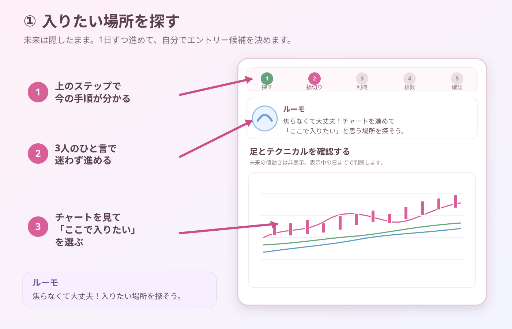
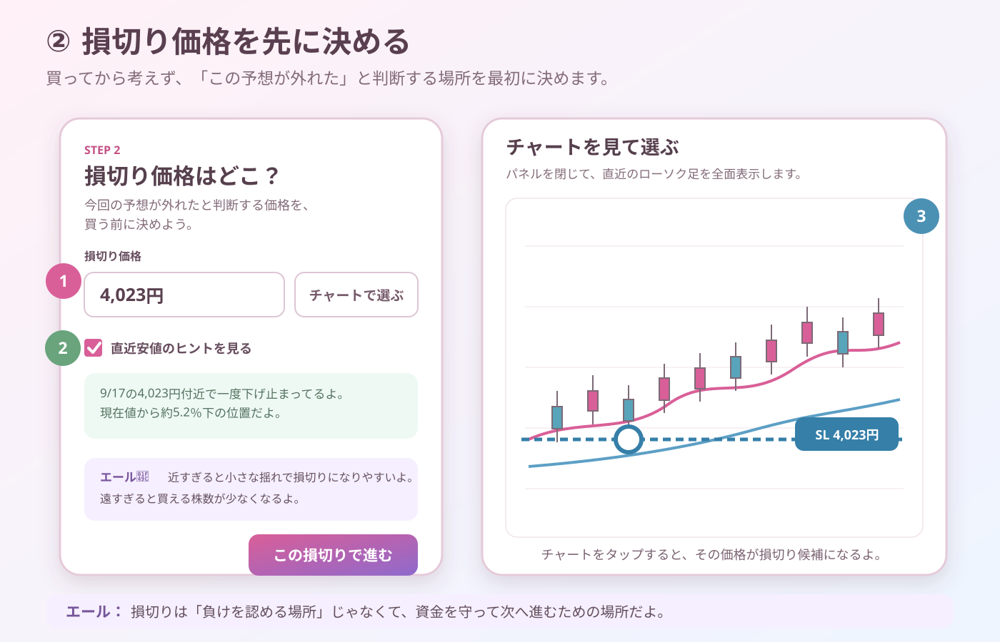

コスモス🌸
情報が多くても大丈夫。見る順番を決めれば、落ち着いて整理できるよ🌸
BEFORE USING REAL MONEY
かぶたねは「次に上がる銘柄を当てるサイト」ではありません。候補を探し、理由を確かめ、未来を隠したチャートで失敗も含めて何度も練習する場所です。
最初から全部の機能を覚えなくて大丈夫。まずは、このページの4つの順番だけ覚えよう。
START HERE
数字を全部理解してから始める必要はありません。候補を見つけたら、個別ページで毎回同じ順番へ戻ります。
LET'S GO TOGETHER
情報が多くても大丈夫。見る順番を決めれば、落ち着いて整理できるよ🌸
練習なら何度失敗してもOK！まずは1回、一緒に最後まで進めてみよう✨
買う前に逃げ道を決めよう。損切りは失敗じゃなくて、資金を守るための約束だよ。
BASIC WORDS
これは買い・売りの指示ではなく、月足の勢いを整理するための表示です。
月足RSI14が、自身の5か月移動平均を下から上へ抜けた最初の月。
月足RSI14が5か月移動平均より上にあり、勢いが続いている状態。
月足RSI14が5か月移動平均以下へ戻った状態。弱まりを確認する目印です。
STEP 1 — FIND
ここでは買う会社を決めません。次に詳しく調べる候補を見つけます。
迷ったら「まずは基本」。候補を絞りたい時は「コスモス注目」から始めよう。
始まったばかりか、勢いが続いているかを確認する。どちらが正解という意味ではありません。
候補を増やしすぎると判断が散らかります。会社名を押して詳細へ進もう。
知っている会社だけに偏らず、価格・勢い・財務を比較してみよう。
カードの「この銘柄で練習」から、銘柄コードを設定した状態で移動できます。
コスモス🌸 候補一覧は「買うリスト」じゃないよ。気になった理由を確かめるための入口だよ🌸
STEP 2 — CHECK
細かい指標を全部見るより、毎回同じ順番で確認する方が判断を比べやすくなります。
日足・出来高・移動平均と月足RSIで、価格の方向と勢いを見ます。
売上成長・ROE・自己資本・フリーCFを中心に確認します。
信用買い残・売り残を価格と同じ期間で比べます。
提出者・保有目的・割合の増減を、最後の補助材料にします。
エール💜 月足RSIが強くても、必ず上がるわけじゃないよ。価格の位置と、想定が崩れる場所も一緒に見よう。
STEP 3 — PRACTICE
チャート上へすべての注文ラインを出し続けず、その時に必要な操作だけが表示されます。

1日または5日ずつ進めて、表示中の情報だけでエントリー候補を探します。この時点では、まだ買いません。
ルーモ✨ まだ買わないよ！先に逃げ道と利益の受け取り方を決めよう✨

「今回の予想が外れた」と判断する価格を決めます。価格を入力しても、チャートをタップしても設定できます。
エール💜 損切りは負けを決める価格じゃないよ。資金を守って、次の練習へ進むための価格だよ。
THE REST OF THE FLOW
1.5R・2R・3R、またはチャートから選びます。1R未満では進めません。
許容損失、配分上限、現金、売買単位から安全な上限を自動計算します。
エントリー、損切り、利確、株数、最大損失を確認して初めて注文します。
含み益・含み損ではなく、最初に決めた計画がまだ有効か確認します。
損切りは自動確定。利確到達時は25％・50％・全利確・継続から選びます。
RISK MANAGEMENT
総資産300万円、許容損失1％なら、今回の最大損失は3万円です。
かぶたねは、リスク上限に加えて「1銘柄への配分上限」「現金」「100株・1株の売買単位」も比較し、最も小さい株数を推奨します。
コスモス🌸 分割しても、合計の損失上限は増やさないよ。追加購入のたびに残りリスクを計算するよ🌸
WHILE HOLDING
毎日励ますのではなく、判断が揺れやすい場面でコメントします。
当てるゲームじゃなくて、決めたルールを守る練習だよ✨
不安でも、損切り価格を下へ動かさないようにしよう。
早く売りたくなったら、最初に決めた利確理由を確認しよう🌸
PORTFOLIO TEST
複数銘柄を持った場合の資産推移と最大下落を、過去データで確認します。
期間全体で資産がどれだけ増減したかを確認します。
途中でどこまで資産が減ったかを見て、自分が続けられるか考えます。
Yahooで取得できるTOPIX連動ETFの調整済み価格を代替使用します。
入口月・出口月・損益・退出理由を確認します。
READY CHECK
全部にチェックできない時は、もう一度かぶたねで練習しよう。
練習では失敗して大丈夫。3人と一緒に最後まで進めよう。
本サイトは情報提供・学習・練習を目的としたツールです。表示結果や過去実績は将来の利益を保証しません。Yahoo Finance由来のデータは遅延・欠損する場合があります。最終判断では企業の公式情報と、ご自身のリスク許容度を確認してください。